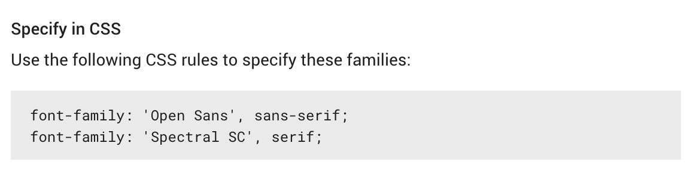

HTML Fundamentals
EXERCISE: HTML Review
Download the exercise file here. Open errors.html in your editor and see if you can spot and correct all of the errors!
It could be formatting issues like tabbing nested elements, to mismatched tags, to missing quotes or recommended attributes.
Pro tip!
Move this exercise file from your downloads folder and add it somewhere you can find it. (e.g. organized with the rest of your LLC project/exercise files)
Audio and Video
HTML5 introduced better support for media with <audio> and <video> tags. However, with sites such as YouTube and Vimeo, it’s often easier (and less bandwidth) to go with these options.
Sites like these and other media sites such as Instagram and Twitter all offer embed options.
Extra resources
Let’s check out the different embed options for YouTube, Instagram, Twitter and other media sites.
Intro to CSS
- CSS = cascading stylesheet
- stylesheet language with its own syntax rules, different from HTML
- used to separate content from presentation
- presentational HTML tags and attributes are now obsolete
- stylesheet contains a list of rules
- reduces redundancy and saves time
CSS will require some new symbols: curly brackets { }, colon : and semi-colon ;

Syntax & Terminology
Selectors determine which HTML element(s) to apply the styles to.
Declarations are style rules written with property:value pairs. They must end with a semi-colon (;) to indicate that the instruction is complete.
A declaration block holds all the declarations within curly brackets { } for a specific selector.
selector {
property: value;
}
Properties determine the type of style to be applied.
Values are specific to the property.
p {
color: red;
}
In the above example, what is the selector? Property? Value?
Multiple CSS Declarations
Multiple declarations can be added for one selector to add and modify multiple styles.
h2 {
background-color: green;
font-size: 50px;
line-height: 1.5;
}
There are many CSS properties with new ones being added and old ones being retired (deprecated). It’s good to have a few resources on hand.
CSS Comments
Just like HTML, use comments in CSS to leave notes, “comment out” code for later or for organization. Comments are written between a forward slash & asterisk and must close in the opposite order.
p {
color: #cc0066; /* magenta */
}
/* HEADER STYLES */
header {
width: 80%;
}
/* Saving this for later
.slider {
width: 100px;
background: red;
}
*/
Basic CSS selectors
Type Selectors
Type selectors target HTML elements by their element tag name.
p {
/* targets all paragraphs */
}
a {
/* targets all links */
}
Class Selectors
A class attribute can be added to any element but the value is defined by you. The class value can then be used as a selector for any element that references the class attribute.
Classes can be used multiple times on the same page. In CSS, classes are denoted by a leading period.
<p>This is a paragraph</p>
<p class="special">This is a special paragraph</p>
<span class="special">Special span text.</span>
/* general - applies to all paragraphs */
p {
color: yellow;
}
/* specific - applies to any element with this class */
.special {
color: blue;
}
/* more specific - applies only to paragraphs with this class */
p.special {
color: red;
}
Note that the last example, p.special, does not have a space between the element selector and the class name.
ID Selectors
In addition to being used for in-page linking, id attributes can also be used for CSS.
id attributes can only be used once per page.
In CSS, ids are denoted by a leading hash/number symbol (#).
#about {
background: blue;
}
Naming conventions
When choosing a class or id name, choose a descriptive, functional name and do not use spaces! Use hyphens -, underscores _ or camel case to separate words.
CSS is also case sensitive, so while these three examples below look similar, CSS will read these as three different classes.
class="content-wrapper"
class="content_wrapper"
class="contentWrapper"
It’s important for organization (and for your own sanity as well) to pick one style and be consistent.
There are many more selectors but the few outlined here will give you a good starting point. We’ll be exploring more over the next few weeks.
Referencing CSS
There are three ways to reference (add) CSS to an HTML document.
Inline CSS
Can be included in any HTML element using the style
attribute.
The property:value pairs are included as the
attribute values. Multiple declarations can be contained in the value.
<body>
<h1 style="font-size:16px;">Page Heading</h1>
<p style="color:pink;font-size:12px;">Just some copy to put in my paragraph.</p>
<p>Yep, another paragraph.</p>
</body>
Internal CSS
Included in the <head> (not <header>) with a <style> tag.
<head>
<title>Page Title</title>
<meta charset="utf-8">
<style>
h1 {
font-size: 16px;
}
</style>
</head>
Note that in XHTML, the type attribute was required.
<style type="text/css">
h1 {
font-size: 16px;
}
</script>
External
This method links to a separate stylesheet file (uses a .css file extension) to separate the CSS from the HTML document.
This method is recommended because it can be used across entire websites and updated quickly. Like the internal method, it’s included within the <head></head> of the document but links to the css file instead.
Use a <link> tag and two attributes, rel (relationship) and href (points to stylesheet file location).
Remember, CSS files are often saved in a separate folder for organization, so make sure the file path points to the appropriate directory.
<head>
<title>Page Title</title>
<link rel="stylesheet" href="css/style.css">
</head>
Class exercise
Back in the text editor, create a new CSS file. (File > New File or ctrl/cmd + N)
Some common file names are “global.css”, “main.css”, custom.css”, “project-name.css”, “styles.css”, etc. Be sure to save it inside the same project folder that your index.html file from last week is in. You can create a css folder if you want or just leave the css file right next to index.html. Next, add it to index.html using the
<link>tag.<link rel="stylesheet" href="css/styles.css">Try a basic test to see if the file linked properly by adding a background color on the entire viewport.
body { background: lightblue; }
More about referencing CSS here.
CSS Colours
- keywords - use the actual name (e.g.
red,blue,papayaWhip,paleGoldenrod, etc) - RGB (red-green-blue) - uses 3 numerical values between
0(represents black) and255(represents white) - hex code - number sign (
#) followed by six hexadecimal characters (0-9, A-F)
/* These are all the same colour */
p {
background: firebrick;
background: rgb(178,34,34);
background: #B22222;
}
Colour resources:
- http://coolors.co
- http://colours.neilorangepeel.com
- http://wesandersonpalettes.tumblr.com
- http://www.colorpicker.com
- http://www.colourlovers.com
- http://flatuicolors.com
- http://color.hailpixel.com
Cascading
CSS executes from top to bottom (hence “cascading”) so the order of your CSS declarations matter. The declaration that comes after overrides the one that came before.
In this example, based on the cascading rules, what colour will the <h1> be?
h1 {
color: black;
}
h1 {
color: blue;
}
It’s a common error to declare the same selector/property combo as your CSS files get bigger and longer so organization is key to help reduce these issues.
Pro tip!
Often, projects will use more than one CSS file. The ordering of CSS also applies the order of the referenced CSS files in the <head> of the HTML document.
Inheritance and Specificity
One of the strengths of CSS is the styles can be inherited from parent elements to child/descendant elements. Remember the family tree relationship? This family tree-like structure is often referred to as the DOM (Document Object Model).
Read more about the DOM here.
HTML
<body>
<h1>My Website</h1>
<p>This is a paragraph.</p>
<p>This is another paragraph.</p>
</body>
CSS
body {
color: blue;
font-family: Helvetica, Arial, sans-serif;
}
h1 {
color: black;
}
In the above example, all descendants of <body> will inherit the styles. However, when a more specific selector is used (like h1), it overrides the inherited values.
EXERCISE: CSS Selectors
Practice using the different types of selectors. In your newly created styles.css file:
- change the text colour of all elements on the page
- use the
colorproperty andbodyas the selector- use a more specific selector to change the
colorof just the theh1elements- create a
classattribute and add it to 2 paragraphs
- using the class name as the selector, change the
colorBonus:
Add the sameclassfrom step 3 to a link (anchor tag). Because links already have a default color (blue), you’ll need to use a more specific selector to change the color.
If you want even more practice with selectors, try this game: http://flukeout.github.io/
Typography
Good writing and good typography can help your reader understand your message more clearly.
Typography is the art of arranging type to engage and guide your readers.
Typeface is what you think of when you think of Font. It is a set of fonts or a font family that is designed with common characteristics and features.
Font is the individual font file that is part of the font family or typeface.
For example, Helvetica Neue is the typeface. It is a font family which contains many font files from Helvetica Neue Ultra Light to Helvetica Neue Extra Bold. The decision to set your type in Helvetica Neue and how you arrange it on the page is typography.
Type Classification

Serif Typefaces
- distinguished by the little “feet” or “hats” at the bottom or top of the letters
- grew out of the hand-lettering of scribes and roman or blackletter calligraphic writing.

Sans Serif Typefaces
- just like the name implies–no serifs at the end of the strokes
- most are monoweight
- the strokes of the letterform appears to be all one weight
Much debate has gone into whether serif typefaces are better than sans serif typefaces in terms of readability at different sizes.
Some argue that serif typefaces have historically been better for small text because their serifs guide the eye while reading. Others assert that sans serif typefaces are better for reading because they are unencumbered by serifs.
Classification aside, when selecting a font, consider the application and the readability of the letterforms at the sizes you need.

Script Typefaces
- appear to be hand-lettered with a calligraphy pen, brush or pencil or pen
- use script typefaces sparingly and appropriately for your content
- can be unreadable in small sizes, all caps and long blocks of text

Decorative Typefaces
- have the characteristic of being very distinct in their style
- not great for long blocks of text, may become too consuming and unreadable
- can be great for decorative touches and add character to a design
Most decorative typefaces are one offs containing just one font file.
Tips for Selecting and Pairing Fonts
- Personality
- select fonts to reflect your personality, tone of voice and/or your brand
- Readability
- choose fonts that are easy to read
- try them in various sizes, weights and styles
- Contrast
- when pairing fonts, strive for sufficient contrast
- choose typefaces of different types or styles
- contrast with a serif and a sans serif, or
- a thick condensed sans-serif with a thin sans-serif
- Flexibility
- Select fonts that have multiple styles to give you the most flexibility
- Clarity
- select only one or two typefaces for your content
- too many typefaces may make your design unclear
- Completeness
- look for fonts that have a complete character set
- pay attention to the glyphs and special characters you might need such as “@”, “$”, “#”, etc
- missing characters may be a sign of an incomplete and poorly designed font
Resource
Chrome extension for finding out what fonts are used on any website.
Typefaces, CSS and the Web
Web Safe Fonts
Fonts that are considered to be “web safe” refer to pre-installed fonts on a computer or device.
Because not all operating systems have the same fonts installed, use a font stack in your CSS to provide multiple options. Choose fonts that look similar and a generic option to provide a fallback option.
See examples of web safe fonts here:
CSS font-family
In CSS, to change the default typeface, use the font-family property.
body {
font-family: "Helvetica Neue", Arial, sans-serif;
}
- best practice is to list at least 2 options
- first font is the primary choice
- alternative fonts are declared in order of preference and separated by a comma
- font names with two or more words should be wrapped in quotation marks (single or double quotes)
- last font should be the generic option
Generic fonts
- sans-serif
- serif
- cursive (script fonts)
- fantasy (decorative fonts)
- monospace (fixed width fonts)
Custom Fonts
Free vs. Premium Fonts
There are thousands of fonts available to download and use beyond the default web safe fonts.
Free fonts:
- free, no cost to use (sometimes free for personal use but need to be paid for commercial use)
- may have missing characters
- limited in the number of styles (generally one or two styles)
- are commonly used
Premium fonts:
- can be costly; prices vary
- typically better quality and elegantly designed
- have a complete character set
- usually have multiple styles
- more exclusive and unique
Font Resources
- Google Fonts is a great source of quality & free fonts for the web - https://www.google.com/fonts
- Google Font pairing resource - http://femmebot.github.io/google-type/
- Typekit is a Adobe subscription based font service that allows you to use their library of fonts for desktop and web use - http://typekit.com/
- Fonts.com has a wide library of premium fonts to choose from including a web font delivery service - http://www.fonts.com/
- Monotype has a history of providing quality premium fonts - http://www.monotype.com/
Google Fonts
Google Fonts is a free service. You can link directly to their CSS files, making the fonts available to your site visitors and does not rely on system installed fonts. To use:
- Go to Google Fonts.
- Click on the red and white plus sign to select a font.

- In the drawer that appears at the bottom of the page, customize your selections.

- Be sure to avoid a heavy load!

- Copy the
<link>code snippet in the embed tab and add it to the<head>of your page to reference their CSS.

<head>
<meta charset="UTF-8">
<title>My Website Title</title>
<link href='http://fonts.googleapis.com/css?family=Bad+Script|Open+Sans:400,300' rel='stylesheet' type='text/css'>
<link rel="stylesheet" href="css/styles.css">
</head>
Now you can use these new fonts with the font-family property, using the font name listed in the example on the Google Fonts page.

EXERCISE: Google Fonts
- Choose two fonts from Google Fonts to use for the typography exercise.
- Open up your style.css project file.
- Add the Google Fonts CSS file to the head.
Follow the following instructions:
- Using the ‘body’ selector, set the font family to your first Google font choice.
- For the h1 & h2 headings only, set the font family to your second Google font choice.
- Review the answers together!
Workflow Tips & Tools
- Use a service like Dropbox or Google Drive to sync and save your work in the cloud.
- Use a USB drive to save your work.
- Use some kind of bookmarking service to store all your resources in one place. (You’ll have many!) Here’s a few to try out:
- Pixlr is a free image editing tool. This will coming handy for cropping and manipulating image files.
More CSS typography
font-weight & font-style
Remember, use HTML for meaning and CSS for presentation. It doesn’t matter if the default HTML shows text in bold, not bolded, italicized, etc, because CSS can change all that!
font-weight: bold; /* makes text bold */
font-weight: normal; /* removes bold style */
font-style: italic; /* sets text to italic */
font-style: normal; /* removes italic style */
text- properties
text-align
Used for aligning text and accepts five values: left, right, center, justify and inherit.
text-decoration
Most commonly used to add or remove underlines but accepts these five values: none, underline, overline, line-through and inherit
text-transform
Accepts five values: none, capitalize, uppercase, lowercase and inherit.
capitalizecapitalizes the first letter of each worduppercasevalue will capitalize every letterlowercasevalue will make every letter lowercase
Note that when a CSS property accepts inherit as a value, it will inherit the style set in either the parent or nearest ancestor element. none usually removes the style defined by that property.
CLASS EXERCISE: Typography & CodePen
Let’s try out the above typography based CSS properties. Use this example on CodePen to experiment.
CodePen is basically a “sandbox” to try out code without switching back and forth between a text editor and browser. When you save your pen, a unique URL is created for you OR sign up for a (free) account to save your pens. You can also explore and “fork” (save a copy) and edit pens by other users.
EXERCISE:
type-&font-propertiesBack in style.css of your project, complete the following:
- Change the font weight of the h1 heading.
- Italicize the h2 heading.
- Make the text in the h2 heading all uppercase.
- Center align all the text in the footer.
These are just a few type related CSS properties. We’ll be going over more in future lessons.
Bonus: @font-face
The @font-face CSS3 method can be used to embed and load fonts files that are not hosted online like Google Fonts. These font files are downloaded and included in your folder directory.
@font-face must be declared in your CSS files first before you can use the downloaded fonts. If you are targeting modern browsers, this snippet below will be enough to provide browser support.
@font-face {
font-family: 'Font Name';
src: url('file-path/font-file.woff2') format('woff2'),
url('file-path/font-file.woff') format('woff');
}
font-family: 'Font Name', second-option, sans-serif;
This snippet links the font files to the CSS, as well as declares a font-family name.
Pro tip!
You can choose any font name and rename the font files to anything you wish, so choose something that follows best practices for file management and naming conventions.
CLASS EXERCISE: Apply Styles to Your Project
- Continue adding typography properties and colour to your project.
Extra Resources
- CSS Tricks - more about
font-faceand older browser support - Font Squirrel - free fonts for downloads and
@font-facegenerator (for creating cross-browser font file types) - Google Fonts: Getting Started
~ End ~